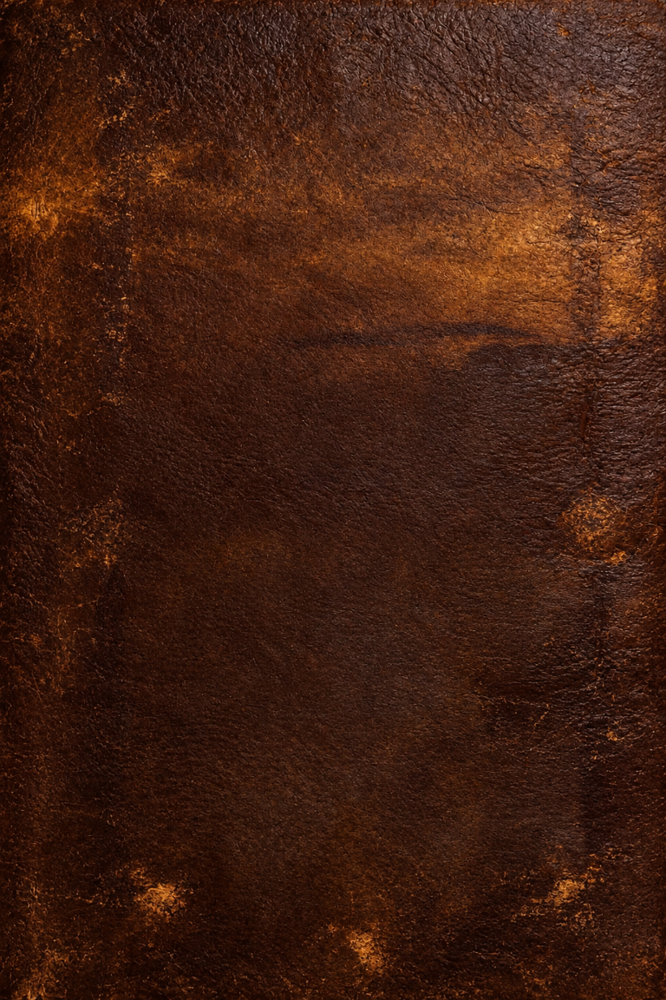

<!doctype html>
<html lang="es">
<head>
    <meta charset="utf-8">
    <meta name="viewport" content="width=device-width, initial-scale=1">
    <title>Cierre - El diario de SolosoyJuan</title>
    <link rel="stylesheet" href="../estilos/styles.css">
</head>
<body>
    <footer class="contraportada leather-bg" id="cierre">
        <!-- Sale de capitulos/cierre para ir a la carpeta img -->
        
        <nav class="btn btn-primary" style="margin: 20px; justify-content: center;">
            <!-- Sale de capitulos/cierre y va directo a la raíz donde está index.html -->
            <a href="../index.html" class="btn">Volver a la portada</a>
        </nav>
    </footer>

</body>
</html>